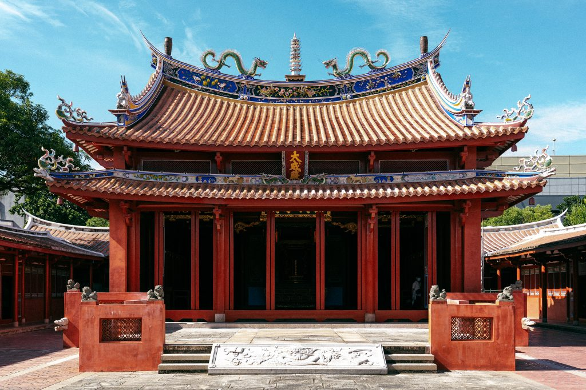

台南景點介紹
- 四草綠色隧道
- 井仔腳瓦盤鹽田
- 赤崁樓
- 台南孔廟
四草綠色隧道
四草綠色隧道位在台江國家公園內，擁有豐富的生態資源，可以搭乘舢舨遊覽紅樹林交織而成的綠色隧道。

井仔腳瓦盤鹽田
井仔腳瓦盤鹽田是台灣歷史最悠久的鹽田之一，建於西元1818年，現已轉型為觀光景點。

赤崁樓
赤崁樓建於1653年，最初是荷蘭人建築的「普羅民遮城」，後來成為台灣的重要歷史遺跡。

台南孔廟
台南孔廟是台灣第一座孔廟，創建於明朝永曆19年（1665年），至今仍是文化學習的重要場所。
